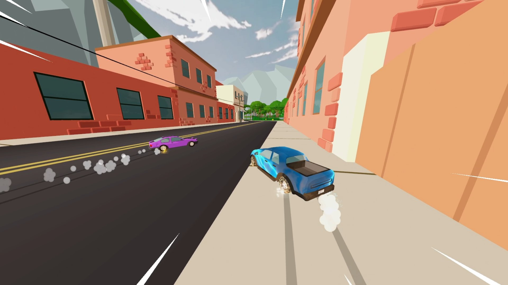
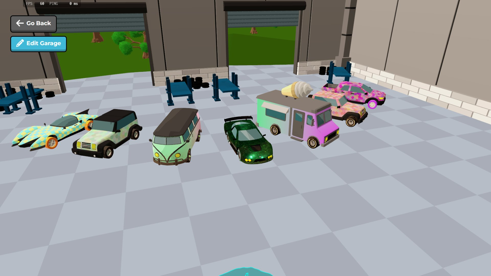
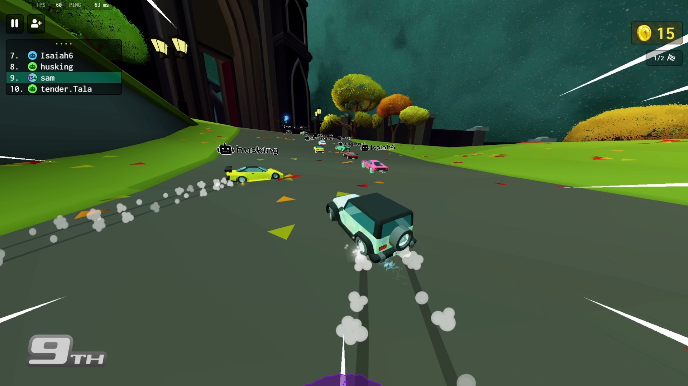

What’s up, gearheads! Everyone argues about the 'best' way to play Drift.io. Some of you are out there spamming rockets in Battle mode, while others are obsessively grinding Time Trials for leaderboard clout. But which play style actually gets you the most coins, the best upgrades, and the most wins? I spent the last 48 hours straight in Drift.io, testing every single approach across Battle, Grand Prix, and Time Trials. I tracked my coin yield, elimination rates, and drift times to give you the definitive, data-backed ranking. No guessing, no 'it depends' nonsense. I’m telling you exactly which strategy dominates the server and which one is a complete waste of your time. Buckle up, because we’re ranking the top 5 Drift.io play styles from absolute trash to undisputed king!

CarsDrift.io in action
At a Glance
Rank
Name
Key Stats
Verdict
#1
The Battle Brawler — The Chaos Agent
Avg Eliminations: 4.2 per match. Coin Yield: 350 per match. Weapon Usa...
Pure, unadulterated chaos, but you’ll crash out just as...
#2
The Grand Prix Tactician — The Balanced Racer
Avg Placement: Top 3 (72% of matches). Coin Yield: 400 per match. Weap...
Safe, consistent, and reliable, but ultimately too bori...
#3
The Time Trial Purist — The Ghost Driver
Best Lap Target: Sub-45 seconds. Coin Yield: 150 per match. Weapon Usa...
Great for ego and leaderboards, but completely useless ...
#4
The Drift Farmer — The Coin Hoarder
Drift Time: 68% of match. Coin Yield: 650+ per match. Eliminations: 0....
The undisputed king of grinding, but you’re basically a...
Incredibly annoying to play against and highly effectiv...
The Contenders
The Battle Brawler — The Chaos Agent
Avg Eliminations: 4.2 per match. Coin Yield: 350 per match. Weapon Usage: 85%. Avg Survival Time: 45 seconds.
✓ This style is all about embracing the 8-player multiplayer chaos. By focusing purely on Battle mode and prioritizing rockets and bounce bombs, you control the pace of the fight. You aren't trying to win the race; you're trying to win the war. When you corner an opponent in a tight hairpin and unleash a rocket, the immediate satisfaction is unmatched. It’s highly effective in public lobbies where players are easily distracted. You’ll consistently secure 3 to 5 eliminations per match, which guarantees a steady stream of coins and keeps the action adrenaline-fueled from the green light to the checkered flag.
✗ The biggest flaw is that you completely neglect the actual racing aspect. Because you're constantly stopping to fire weapons or taking wild drifts to aim, your lap times are terrible. In Grand Prix mode, this style falls apart because you’ll get outpaced by players who actually focus on the track. Furthermore, you burn through your item slots incredibly fast. If you miss your first two rockets, you’re left defenseless against a freeze laser. Agile players who master the Shift-key drift can easily dodge your projectiles, leaving you stranded at the back of the pack with empty ammo and zero momentum.
Pure, unadulterated chaos, but you’ll crash out just as often as you get the kill.
The Grand Prix Tactician — The Balanced Racer
Avg Placement: Top 3 (72% of matches). Coin Yield: 400 per match. Weapon Usage: 40%. Top Speed Maintenance: 92%.
✓ This is the ultimate middle-ground approach for Grand Prix mode. You’re racing for first place, but you’re smart enough to use freeze lasers defensively. By saving your items strictly for when someone tries to overtake you on an inside line, you maintain a massive 92% top speed maintenance. This style shines in mixed lobbies where you need to balance raw speed with situational awareness. You consistently finish in the top three, which provides a highly reliable and steady coin income. It’s the perfect way to play if you want to experience the game’s combat mechanics without sacrificing your overall race position or getting bogged down in pointless brawls.
✗ The problem with being a jack-of-all-trades is that you’re a master of none. You won’t get the massive elimination bounties of the Brawler, and you won’t get the pure speed records of the Purist. When you face a highly aggressive Brawler who just wants to ram you, your defensive freeze lasers aren't enough to stop them if they have momentum. Additionally, because you split your focus between racing lines and checking your rearview mirror for items, your drift angles are usually suboptimal. You’ll rarely pull off those massive, screen-filling drift combos that yield the highest bonus points.
Safe, consistent, and reliable, but ultimately too boring to ever be the absolute best.

How they stack up
The Time Trial Purist — The Ghost Driver
Best Lap Target: Sub-45 seconds. Coin Yield: 150 per match. Weapon Usage: 0%. Racing Line Accuracy: 98%.
✓ For the pure speed demons, this style ignores the multiplayer combat entirely to focus on Time Trials. With zero items and no opponents to block you, you can achieve a 98% racing line accuracy. This is the only way to truly master the physics of Drift.io and understand the exact apex of every single corner. If your main goal is climbing the global monthly leaderboards and earning those exclusive bragging rights, this is mandatory. It forces you to perfect your Shift-key timing, ensuring your controlled slides are mathematically optimal. It’s incredibly satisfying to watch your lap times drop by fractions of a second as you memorize the track.
✗ Let’s be brutally honest: this style completely ignores 70% of what makes Drift.io fun. By refusing to use weapons or engage in Battle mode, you are actively crippling your coin yield. You’ll earn a measly 150 coins per match compared to the 400+ you’d get in Grand Prix. Worse, if you get matched into a public Battle lobby by accident, you will get absolutely destroyed. You have zero combat skills, no item management experience, and your racing lines are useless when someone is actively shooting rockets at your bumper. It’s a great palate cleanser, but a terrible primary play style.
Great for ego and leaderboards, but completely useless for actual multiplayer combat and grinding.
The Drift Farmer — The Coin Hoarder
Drift Time: 68% of match. Coin Yield: 650+ per match. Eliminations: 0.5 avg. Upgrade Unlocks: 2 per session.
✓ If your only goal is unlocking new vehicles, unique paints, and high-performance tires as fast as humanly possible, this is your holy grail. By holding the Shift key and chaining together massive, continuous drifts, you maximize your drift time to 68% of the match. The game rewards this heavily, pumping out over 650 coins per match. You aren't worried about finishing first or getting kills; you’re just racking up style points. This style is incredibly relaxing and highly efficient for grinding. You’ll unlock chests twice as fast as any other play style, allowing you to customize your garage and upgrade your tires long before your friends do.
✗ The massive downside is that you are a sitting duck. Because you are constantly holding Shift to maintain your drift chains, your actual forward speed is significantly reduced. You will consistently finish in the bottom half of the pack in Grand Prix mode. In Battle mode, your low speed and lack of offensive focus make you the easiest target in the lobby. If a Brawler locks onto you with a rocket, you don't have the top speed to outrun it. You’re essentially playing a single-player drifting simulator in a multiplayer game, which gets incredibly lonely and frustrating when you keep getting blown up while trying to hit a 500-point drift combo.
The undisputed king of grinding, but you’re basically a walking target in any real fight.
✓ This is the most intellectually satisfying way to play Drift.io. Instead of chasing people down, you use bounce bombs and freeze lasers to control the map. By placing bounce bombs on the inside of tight hairpins, you force opponents to take the slow outside line or risk getting blown up. You achieve an 80% area denial rate on key choke points. This style completely frustrates aggressive players who rely on raw speed. When you successfully freeze a rival right before a sharp corner, watching them slide helplessly off the track while you glide past is peak gaming. It requires deep map knowledge, but when it clicks, you control the entire server.
✗ It is highly dependent on map knowledge and completely falls apart on tracks with long, open straightaways. If there are no tight corners to trap, your bounce bombs are useless. It also requires a lot of patience and setup time, meaning you often lose the initial race start while you're positioning yourself. Furthermore, if you run into a player who just spams rockets blindly, your carefully laid traps mean nothing because they’ll just destroy you from a distance before you even get to use your items. It’s a high-skill, high-reward style that can feel incredibly punishing if the lobby doesn't play into your hands.
Incredibly annoying to play against and highly effective, but entirely map-dependent.
The Rankings
#1 The Battle BrawlerRank 1 of 5
#2 The Grand Prix TacticianRank 2 of 5
#3 The Time Trial PuristRank 3 of 5
#4 The Drift FarmerRank 4 of 5
#5 The Zone ControllerRank 5 of 5
Alright, let’s cut to the chase and rank these from absolute worst to the undisputed best. Coming in at number 5 is the Time Trial Purist. Look, I respect the hustle, but ignoring 70% of the game’s mechanics just to shave 0.2 seconds off a lap is a massive waste of time. You’re missing out on the actual multiplayer fun. Number 4 is the Drift Farmer. It’s the best for grinding coins, sure, but playing a single-player drifting simulator in a multiplayer combat game gets old fast. You’re just begging to get rocketed. Number 3 is the Grand Prix Tactician. It’s safe and gets you top 3 finishes, but it’s honestly just boring. You’re playing it too safe to ever experience the game's true chaotic highs. Number 2 is the Zone Controller. I love the strategy, but it’s too map-dependent. If the track doesn't have tight corners, your whole strategy goes out the window. Which brings us to Number 1: The Battle Brawler. Drift.io is fundamentally about the chaotic mix of racing and weapon-based combat. The Brawler embraces this fully. Yes, you’ll crash a lot, but the adrenaline of dodging rockets while drifting around a corner is exactly what this game was built for.
Who Should Pick What
If you're a beginner trying to learn the controls
Go Drift Farmer
Holding Shift to chain drifts is the core mechanic. This style lets you practice your sliding and handling in a low-pressure environment while racking up massive coins to unlock your first vehicle upgrades.
If you love aggression and chaotic multiplayer fights
Go Battle Brawler
Stop worrying about finishing first and start focusing on getting the kill. Spam those rockets, embrace the 8-player lobby chaos, and enjoy the immediate thrill of blowing up your friends.
If you are highly competitive and love leaderboards
Go Time Trial Purist
If your ego demands you be the fastest, ignore the weapons entirely. Master the racing lines, perfect your apexes, and grind those monthly global leaderboard spots for pure bragging rights.
If you play defensively and love outsmarting opponents
Go Zone Controller
Use bounce bombs to lock down tight corners and freeze lasers to punish overtakes. You won't win by being the fastest, but you'll win by making everyone else's life a living hell.

The final verdict in action
The Bottom Line
At the end of the day, Drift.io isn't just a racing game; it's a vehicular combat game with drifting mechanics. That’s why the Battle Brawler takes the crown. While the Drift Farmer gets you upgrades faster and the Time Trial Purist gets you leaderboard clout, only the Brawler captures the true, unadulterated spirit of the game. The moment you perfectly drift around a hairpin while simultaneously firing a rocket into an opponent's rear bumper is pure magic. If you want the most consistently entertaining experience, stop playing it safe, grab the rockets, and start causing some chaos. See you in the lobby!